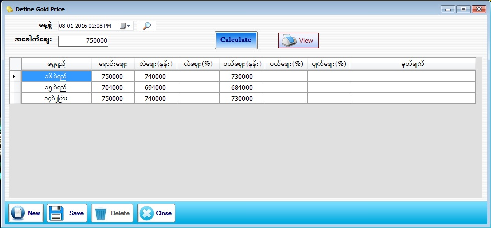

Define Gold Pirce Setup

- Master Setup အောက်ရှိ Define Gold Price Form ကိုဖွင့်ပါ။
- ပေါက်ဈေး ပြောင်းလဲသတ်မှတ်သော Form ဖြစ်ပါသည်။
- ၁၆ပဲရည်စျေး(အခေါက်) ပြောင်းလဲသွားပါက အခေါက်စျေး text box တွင် ပြောင်းလဲသွားသောစျေးကို ချိန်းလိုက်ပါ။ ထို့နောက် calculate button ကိုနှိပ်လိုက်ပါက မိမိဆိုင်တွင်အသုံးပြုသောရွှေရည်များအားလုံးအတွက် ရောင်းစျေး ၊ ဝယ်စျေး၊ လဲစျေးနှုန်းများ ကို Gold Quality Form တွင် သတ်မှတ်ထားသော ပေါက်စျေးတွက်နည်းအတိုင်း software မှ Auto တွက်ပေးပြီး စျေးနှုန်းများ ကျလာမည် ဖြစ်သည်။ လဲစျေး အတွက် ပေါက်စျေး၏10000 အကွာ ၊ ဝယ်စျေးအတွက် ပေါက်စျေး၏ 20000အကွာ သတ်မှတ်ပေး ထားပါမည်။ လဲစျေးနှင့် ဝယ်စျေး အတွက် ပေါက်စျေးများကိုလည်း ထပ်မံပြောင်းလဲ သတ်မှတ်နိုင်ပါသည်။ မိမိစိတ်ကြိုက် စျေးသတ်မှတ်ပြီးပါက Save Button ကို နှိပ်ပြီး သိမ်းဆည်းပေးပါ။ အသစ်ထပ်မံသတ်မှတ်လိုပါက New Button နှိပ်ပြီး အသစ်ထပ်မံသတ်မှတ်ပေးပါ။
- * Define Gold Price Form သည် ရွှေဖြူ(White Gold) မပါ ရွှေ အတွက် သီးသန့် စျေးသတ်မှတ် သော Form ဖြစ်သည်။ *
- Define Gold Price Form အား အသုံးပြုပြီးပါက Close Button ကိုနှိပ်၍ ပိတ်နိုင်ပါသည်။